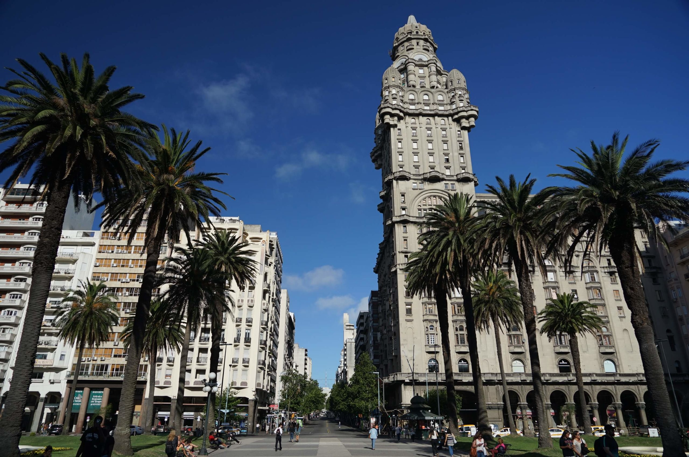
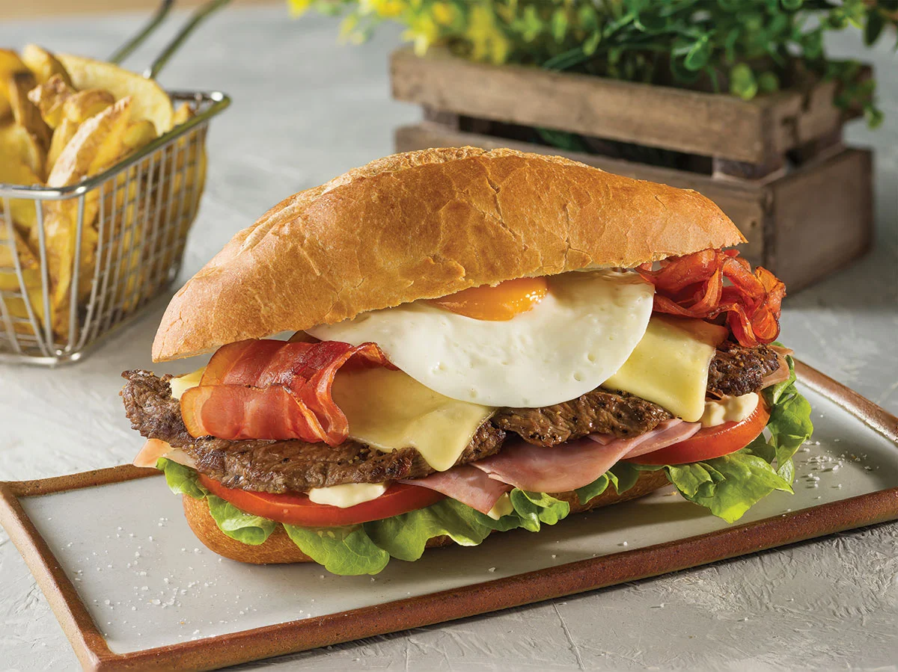

Uruguay
Uruguay es un pais que se encuentra en America del Sur, entre Argentina y Brasil. Su capital es Montevideo y tiene aproximadamente 3,5 millones de habitantes. Aunque no es un pais muy grande, se destaca por sus paisajes, sus costumbres y la forma de vida de su gente.
En cuanto a su geografia, Uruguay tiene muchas zonas verdes, campos, rios y playas. Su clima es templado, por lo que los veranos suelen ser calidos y los inviernos frescos. Gracias a sus tierras fertiles, la agricultura y la ganaderia son actividades muy importantes para el pais.
La economia de Uruguay se basa principalmente en la ganaderia, la agricultura, la industria y los servicios. Se producen y exportan productos como carne, leche. arroz y soja. Ademas, el turismo es una actividad importante, ya que muchas personas visitan el pais para disfrutar de sus playas y conocer sus ciudades.
Historia de Uruguay
Antes de la llegada de los europeos, el territorio uruguayo estaba habitado por diferentes pueblos indigenas, entre ellos estaban los charruas. En el siglo XVI llegaron los españoles, y con el tiempo, se fundaron ciudades como Montevideo.
Durante muchos años, el territorio estuvo relacionado con conflictos entre España, Portugal, Argentina y Brasil. Jose Gervasio Artigas fue uno de los principales lideres de la lucha por la autonomia de la region.
Uruguay declaro su independencia en 1825 y se convirtio en un Estado independiente en 1828, despues de varios conflictos. Desde entonces, el pais fue creciendo y formando su propia identidad, con sus costumbres, sus leyes y sus tradiciones.
Montevideo es la capital de Uruguay y se encuentra al sur de pais, junto al Rio de la Plata. Es la ciudad donde vive la mayor cantidad de personas y donde se encuentran importantes edificios del gobierno, centros educativos, hospitales y empresas.
Algunos lugares conocidos de Montevideo son la Ciudad vieja, la Plaza Independencia, el Palacio Salvo, el Teatro Solis y la Rambla. La Rambla es uno de los lugares más visitados porque muchas personas van a caminar, andar en bicicleta, hacer ejercicio o tomar mate mirando el agua
Montevideo también tiene muchos barrios diferentes,plazas,parques,museos y centros comerciales.Además, es importante para la cultura uruguaya porque allí se realizan muchos espectáculos, partidos de futnol y actividades durante el carnaval.
La comida tipica de Uruguay
La comida uruguaya tiene muchas influencias de la cocina española e italiana. Algunas de las comidas mas conocidas son:
• Asado, carne cocinada a la parilla, que suele compartirse con familiares o amigos.
• Chivito, un sandwich que normalmente lleva carne, jamon, queso, lechuga, tomate y otros ingredientes.
• Empanadas, pueden tener diferentes rellenos, como carne, jamon y queso.
• Milanesas, carne empanada que se puede acompañar con papa fritas o ensalada.
• Torta fritas, una comida hecha con masa frita que muchas personas comen cuando llueve o hace frio.
• Dulce de leche, se utiliza en alfajores, tortas, postres y muchas otras preparaciones.
